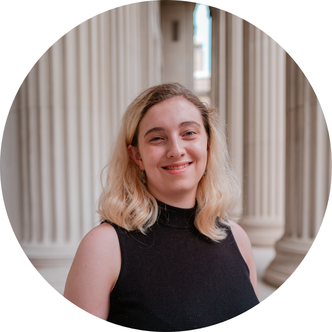

{{ post.title }}
{{ post.description }}

My name is Dani White, and I'm a senior in 6-2 (Electrical Engineering and Computer Science) at MIT. I'm interested in robotics, embedded systems, and control. I'm planning on pursing my MEng at MIT after I graduate at the end of the fall. I've interned at ASML as a Mechatronics intern, Zenuity as a Decision and Control intern, and Tulip Interfaces as a Hardware and Embedded intern. A lot of the project below are from my work on MIT Motorsports, which is a student team that builds an electric racecar to compete in the FSAE Electric competition.
You can email me at dmwhite@mit.edu and find my resume here. Check out the links below for some projects that I'm proud of.
{{ post.description }}